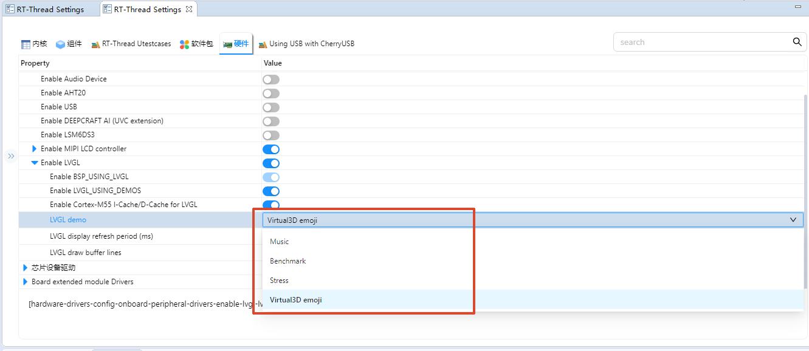

Edgi-Talk_M55_LVGL Example Project
中文 | English
Introduction
This example is based on the Edgi-Talk platform and demonstrates LVGL with multiple display demos running on the M55 application core under the RT-Thread real-time operating system. The current default demo is Virtual3D Animated Emoji, which can be used to verify the LCD display, touch input, LVGL rendering flow, and M55-side graphics acceleration related configuration. The project can also be switched to LVGL official Music, Benchmark, and Stress demos as a reference for GUI application development.
LVGL Overview
LVGL (Light and Versatile Graphics Library) is an open-source embedded GUI development framework designed for resource-constrained devices. It provides modern graphical interfaces with optimized CPU and memory usage, running efficiently on both low-end MCUs and more powerful MPU platforms.
Key Features
Lightweight Optimized for minimal memory and CPU usage, ideal for low-power devices and resource-constrained environments.
Cross-platform Runs on multiple operating systems (FreeRTOS, RT-Thread, Zephyr, Linux) or bare-metal platforms. Only requires display and input drivers to be ported.
Rich Widgets Includes buttons, labels, sliders, charts, tables, lists, etc., and allows custom widget extensions.
Advanced Rendering Supports anti-aliasing, transparency, gradients, shadows, rounded corners, and animations for modern UIs.
Input Device Support Supports touchscreens, capacitive touch, mouse, keyboard, encoder, and multi-touch. Events are unified via LVGL’s event system.
Internationalization UTF-8 encoding with support for bidirectional text (e.g., Arabic, Hebrew).
Extensibility Flexible themes, styles, and integration with file systems and image decoders.
Applications
LVGL is widely used in:
Consumer electronics (smart home panels, smartwatches, appliances)
Industrial HMI and instrumentation
Automotive displays (central console, passenger screen, instrument cluster)
Medical devices (portable monitors, handheld instruments)
Ecosystem & Community
LVGL is MIT licensed and supported by SquareLine Studio for GUI design and LVGL Simulator for PC-based development. A large community provides open-source widgets, themes, and porting examples.
Hardware Description
Backlight Interface

MIPI Interface

PWR Interface

BTB Socket


MCU Interface


Software Description
Developed on the Edgi-Talk platform, running on the M55 application core.
Example features:
Initialize LVGL 9.2, the LCD display driver, and the touch input driver
Start the Virtual3D Animated Emoji demo by default
Support switching to lv_demo_music, lv_demo_benchmark, lv_demo_stress, and other LVGL demos
Enable M55 I-Cache/D-Cache by default and use AXIDMAC to optimize RGB565 area copy
Code structure is clear for understanding display driver integration and LVGL porting.
Demo Description
This project selects the LVGL demo through the BSP_LVGL_DEMO_* configuration options. The default configuration is BSP_LVGL_DEMO_VIRTUAL3D_EMOJI.
Configuration |
Demo |
Description |
|---|---|---|
|
Virtual3D Animated Emoji |
Default demo. It displays a 3D Emoji animation and supports touch dragging, which helps verify the Virtual3D, LVGL display refresh, and touch input paths. This demo only supports LCD rotation at 0 or 180 degrees. |
|
LVGL Music Demo |
Official LVGL music UI demo, mainly used to verify complex widgets, layouts, styles, and animations. |
|
LVGL Benchmark Demo |
Official LVGL performance benchmark demo, used to observe rendering performance, frame rate, and score. |
|
LVGL Stress Demo |
Official LVGL stress test demo. It repeatedly creates, refreshes, and destroys widgets to verify rendering stability and memory usage. |
To switch demos, modify the LVGL Demo configuration in RT-Thread Settings or menuconfig. It is recommended to select only one BSP_LVGL_DEMO_* option at a time, then regenerate the configuration, rebuild, and download the firmware.

Usage
Build and Download
Open and compile the project.
Connect the board USB to the PC using the onboard debugger (DAP).
Flash the generated firmware to the board.
Running Result
After flashing and powering on, the example starts automatically.
With the default configuration, the system starts Virtual3D Animated Emoji. The LCD displays the 3D Emoji animation, with the title
Virtual3D Animated Emojiand the hintDrag the 3D emoji.The serial console prints the current demo and LCD rotation angle, for example:
LVGL virtual3d_emoji demo start, lcd rotation=0
To check the Virtual3D demo status, run the following commands in the MSH console:
virtual3d_demo_stat
virtual3d_render_stat
If the demo is switched to Music, Benchmark, or Stress, the LCD displays the corresponding official LVGL demo UI.
Notes
⚠️ Note: This project requires RT-Thread Studio 2.2.9 or higher.
To modify the graphical configuration, use:
tools/device-configurator/device-configurator.exe
libs/TARGET_APP_KIT_PSE84_EVAL_EPC2/config/design.modus
Save and regenerate code after modifications.
The default
BSP_LVGL_DEMO_VIRTUAL3D_EMOJIdemo does not support LCD rotation at 90 or 270 degrees. Use 0 or 180 degrees, or switch to another LVGL demo if landscape rotation is required.The default configuration enables
BSP_LVGL_ENABLE_CPU_CACHEandBSP_LCD_USE_AXIDMAC_AREA_COPY. If cache, framebuffer, or LCD refresh settings are changed, also check display buffer coherency.If the screen shows no output, check:
LCD connections and power supply
lv_port_disp.candlv_port_indev.cmatch the actual hardwareLCD rotation angle is compatible with the selected demo
Startup Sequence
+------------------+
| Secure M33 |
| (Secure Core) |
+------------------+
|
v
+------------------+
| M33 |
| (Non-Secure Core)|
+------------------+
|
v
+-------------------+
| M55 |
| (Application Core)|
+-------------------+
⚠️ Strictly follow the flashing order to ensure proper system operation.
If the example fails, first flash Edgi_Talk_M33_Template to ensure proper initialization.
To enable M55, configure in M33 project:
RT-Thread Settings --> Hardware --> select SOC Multi Core Mode --> Enable CM55 Core